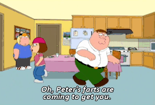
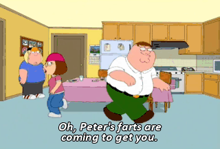

hi. i made this page using neocities because i wanted a place where i could
just talk about peter griffin.
this site does not really have a purpose other than that.
welcome to peter : )

peter is my favorite character on family guy.
i like how he is dumb but also confident and never really embarrassed about anything.
i think that is kind of inspiring in a weird way.
sometimes i will be doing something normal like homework or eating cereal
and i randomly think about peter falling down the stairs or saying "holy crap"
and i start laughing to myself.
my friends don't get it but that's ok.
my friends don't get it but that's ok.
i like the older episodes the most but honestly any episode with a lot of
peter screentime is good to me.
my favorite thing he does is when he commits really hard to a bit even when it makes everything worse.
my favorite thing he does is when he commits really hard to a bit even when it makes everything worse.
thanks for reading my peter page.
i will probably add more later or maybe not.
it depends.
if you are also a peter fan then you are cool.
if you are also a peter fan then you are cool.
check out my other pages


(Doesn't work atm.)